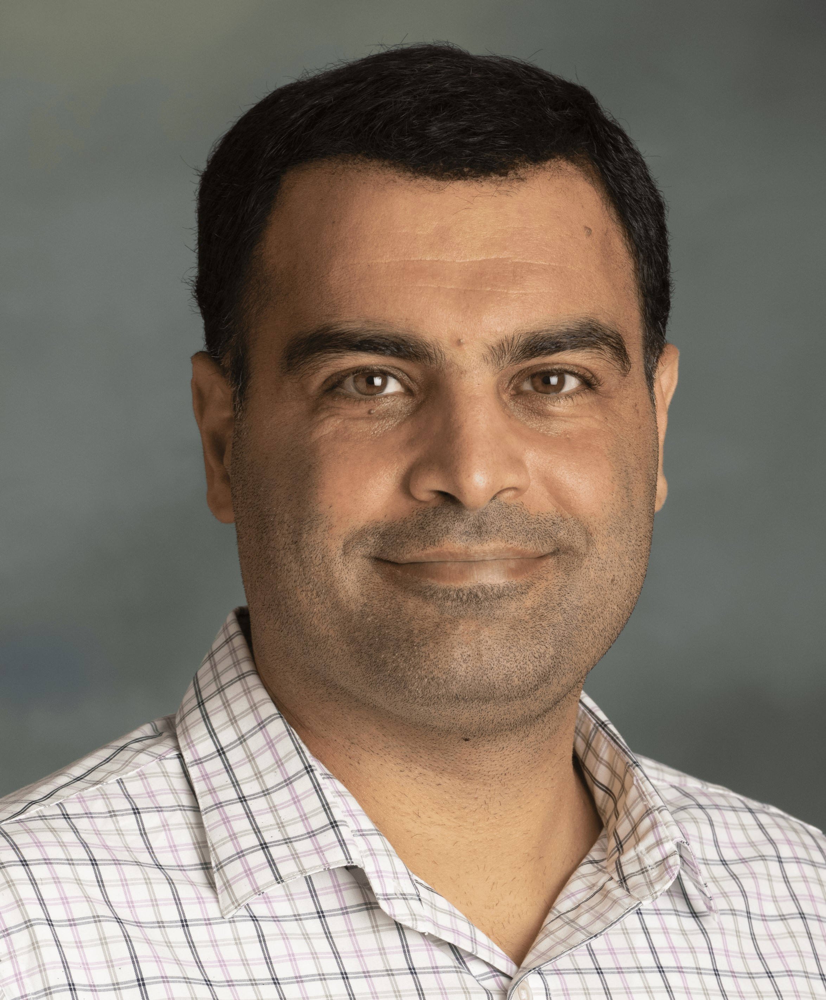

I work on large-scale data systems, cloud computing, distributed data processing, and optimization, with current interests at the intersection of Big Data and Artificial Intelligence, including scalable AI-powered data systems. I welcome collaboration with students, academic researchers, and industry partners.
My research spans large-scale data management, cloud and distributed systems, optimization, and emerging AI-powered data infrastructure.
Large-scale data processing, Apache Spark, data management, and data-intensive scientific workflows.
Resource allocation, cloud data placement, workflow scheduling, and metaheuristic optimization.
Generative AI, RAG, vector retrieval, LLM-based analytics, and scalable AI data pipelines.
Energy-efficient computing, GPU and thermal analytics, and intelligent workload management.
Mahdi Ebrahimi is an Associate Professor of Computer Science at California State University, Northridge (CSUN).
He earned his doctoral degree with a specialization in Data Management. His research focuses on Big Data, large-scale data systems, and cloud computing, with particular emphasis on management and optimization of data-intensive scientific workflows. His work includes metaheuristic optimization techniques for cloud data placement, resource allocation, and workflow scheduling.
His current work explores the intersection of Big Data and Artificial Intelligence, with interests in scalable AI-powered data systems, Generative AI, Retrieval-Augmented Generation (RAG), vector-based information retrieval, and intelligent data analytics.
Dr. Ebrahimi has published in peer-reviewed journals and conference proceedings, including IEEE Big Data venues, and is a member of IEEE.
I welcome motivated Master's students interested in research-oriented projects at the intersection of Big Data, cloud computing, distributed data systems, and AI-powered data systems.
Distributed RAG pipelines for large document collections, including scalable preprocessing, embedding generation, retrieval, and evaluation.
RAGSparkVector SearchNatural-language interfaces for querying, analyzing, and reasoning over large structured and unstructured datasets.
LLMsBig DataAnalyticsAI-assisted resource management, workload scheduling, energy efficiency, and thermal-aware computing.
OptimizationCloudGPUReal-time analytics combining distributed streaming systems with modern AI and LLM-based processing.
StreamingAIData PipelinesA snapshot of my current publication activity and established research themes. See the Publications page for the complete record.
J. Penaojas, K. Salimkhan, M. Fullton, H. Locke, M. Smith, C. Wang, X. Ruan, M. Ebrahimi, and X.-F. Jiang.
IEEE Consumer Communications & Networking Conference (CCNC), 2026.Data-intensive workflow management, scheduling, data placement, and cloud execution, including the DATAVIEW workflow management system.
Big Data • Scientific Workflows • Cloud ComputingOptimization approaches for placement, allocation, and execution of data-intensive workloads in cloud environments.
Optimization • Scheduling • Cloud SystemsStudents interested in thesis, project, or applied research opportunities are encouraged to contact me with their background, technical interests, and the research direction they would like to explore.
Curiosity, solid programming fundamentals, willingness to learn new systems, and interest in building and evaluating research prototypes.
Python, Apache Spark, distributed data systems, cloud platforms, vector databases, RAG/LLM frameworks, and data analytics tools.
Apache Spark, distributed processing, scalable analytics, and modern data platforms.
Data modeling, SQL, database design, and data management.
System architecture, processes, concurrency, memory, and storage.
Security principles, network/system security, and applied security concepts.
I am interested in collaborations where large-scale data infrastructure, cloud computing, optimization, and modern AI intersect. If you see an overlap with your research, organization, or student project needs, I would be glad to discuss possibilities.
Research-oriented projects, thesis/project supervision, prototypes, experiments, and opportunities to develop publishable work.
Collaborative research in Big Data, distributed systems, databases, cloud computing, AI systems, RAG, and optimization.
Applied research, student-industry projects, large-scale analytics, AI over enterprise data, cloud/data-center optimization, and prototype development.
I welcome inquiries from Master's students, faculty and researchers, and industry partners interested in Big Data, cloud computing, distributed data systems, optimization, and AI-powered data systems.
JD-4421
Department of Computer Science
California State University, Northridge
(818) 677-6739